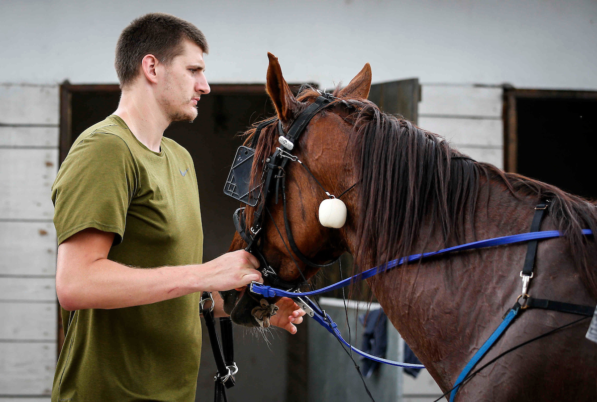

Николу Јокића заступа агенција специјализована за заступање професионалних кошаркаша Беобаскет из Београда. Постао је део глобалне кампање бренда Најки под именом — Come out of nowhere. Некадашњи саиграч из Денвера Мајк Милер му је дао надимак „Џокер”. У слободно време воли да гледа америчку серију Пријатељи. Има ергелу коња који учествују на такмичењима и велики је љубитељ коњичког спорта.
